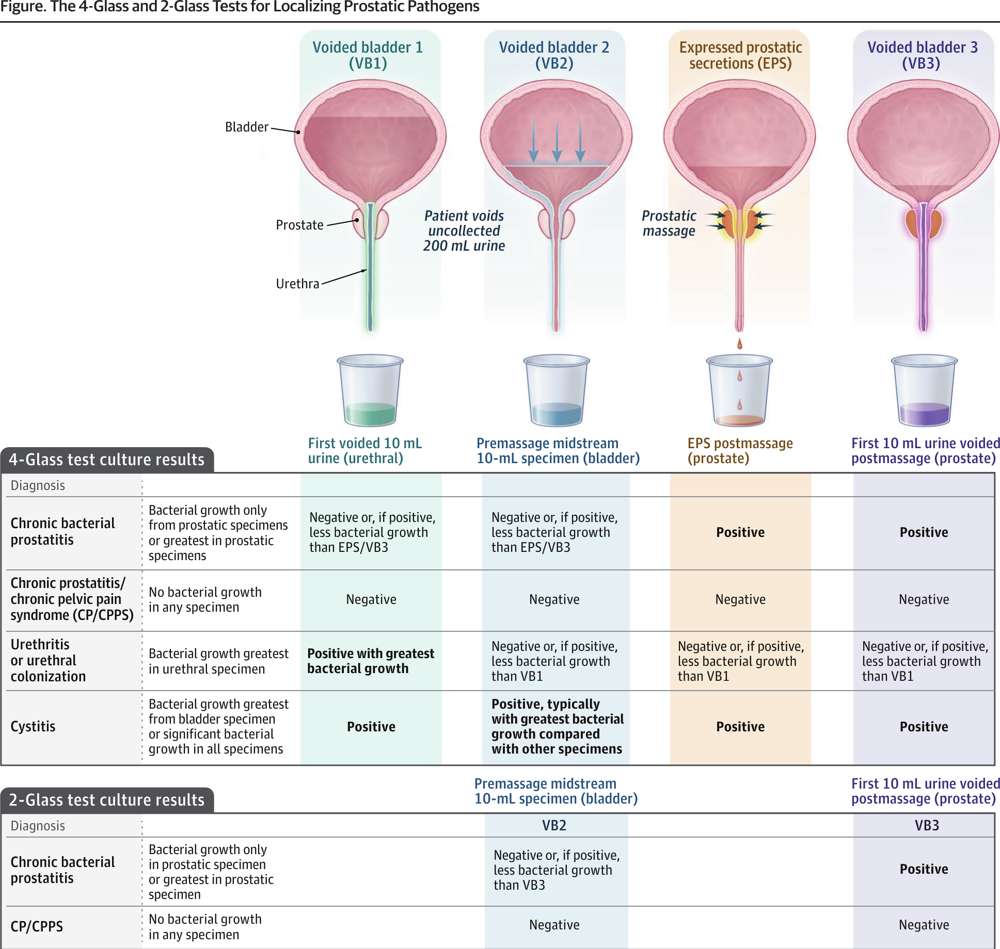

本ページで使用する略語一覧
| ABP | Acute Bacterial Prostatitis — 急性細菌性前立腺炎（NIH I型） |
| CBP | Chronic Bacterial Prostatitis — 慢性細菌性前立腺炎（NIH II型） |
| CP/CPPS | Chronic Prostatitis / Chronic Pelvic Pain Syndrome — 慢性前立腺炎・慢性骨盤痛症候群（NIH III型） |
| UTI | Urinary Tract Infection — 尿路感染症 |
| LUTS | Lower Urinary Tract Symptoms — 下部尿路症状 |
| DRE | Digital Rectal Examination — 直腸指診 |
| PVR | Postvoid Residual — 排尿後残尿量 |
| UCx | Urine Culture — 尿培養 |
| EPS | Expressed Prostatic Secretions — 圧出前立腺分泌液（前立腺マッサージ後に採取） |
| VB1–VB3 | Voided Bladder 1–3 — 排尿検体1〜3（4-glass/2-glass test の各検体） |
| NIH | National Institutes of Health — 米国国立衛生研究所（前立腺炎の分類を策定） |
| NIH-CPSI | NIH Chronic Prostatitis Symptom Index — NIH慢性前立腺炎症状指数（0〜43点） |
| PSA | Prostate-Specific Antigen — 前立腺特異抗原 |
| STI | Sexually Transmitted Infection — 性感染症 |
| FQ | Fluoroquinolone — フルオロキノロン（シプロフロキサシン・レボフロキサシン等） |
| TMP-SMX | Trimethoprim-Sulfamethoxazole — ST合剤（トリメトプリム・スルファメトキサゾール） |
| MDR | Multidrug-Resistant — 多剤耐性 |
| BPH | Benign Prostatic Hyperplasia — 前立腺肥大症 |
| NSAID | Nonsteroidal Anti-inflammatory Drug — 非ステロイド性抗炎症薬 |
| AUA | American Urological Association — 米国泌尿器科学会 |
| CT | Computed Tomography — コンピュータ断層撮影 |
| RCT | Randomized Clinical Trial — ランダム化比較試験 |
| MCID | Minimum Clinically Important Difference — 最小臨床的重要差（NIH-CPSIでは6点） |
| CI | Confidence Interval — 信頼区間 |
本総説の要点
前立腺炎は前立腺の感染・炎症・疼痛と定義され、男性の生涯で約9.3%が罹患する。NIHは前立腺炎を、急性細菌性前立腺炎（I型）・慢性細菌性前立腺炎（II型）・慢性前立腺炎/慢性骨盤痛症候群（CP/CPPS、III型）・無症候性炎症性前立腺炎（IV型）の4型に分類する。前3型はいずれも骨盤痛と排尿症状（頻尿・尿勢低下など）を呈するが、診断・治療は病型ごとに大きく異なる。
無症候性炎症性前立腺炎（IV型）は前立腺生検など他疾患の評価中に偶発的に診断されるもので、追加評価・治療を要さない。本総説は急性細菌性前立腺炎・慢性細菌性前立腺炎・CP/CPPS の評価と管理に関する現時点のエビデンスを、研修医・ICU医が実践に使える形でまとめる。PubMed（2000年1月1日〜2025年5月14日）から2636件を抽出し、83件（RCT 15・メタ解析 4・観察/コホート研究 33・ガイドライン 5・コンセンサス声明 4・質問票検証 2・総説 12・米国規制薬剤ラベル 6・前臨床研究 2）を採用した。
SECTION 1 定義とNIH 4分類
「前立腺炎」は1つの病気ではない
「前立腺炎」という1語には、抗菌薬で治る急性の尿路感染症から、培養陰性で慢性に経過する難治性の骨盤痛まで、病態・治療の異なる複数の病態が含まれる。臨床で最初にすべきことは「どの病型か」を見極めることである。NIH分類の4型のうち、ICU・救急で問題になるのは主に急性細菌性前立腺炎（I型）であり、敗血症・菌血症・尿閉・前立腺膿瘍を合併しうる。
SECTION 2 3病型の比較 ― 症状・診断・評価（Table 1）
Table 1. ABP・CBP・CP/CPPS の症状・診断・評価
| 項目 | 急性細菌性前立腺炎（ABP） | 慢性細菌性前立腺炎（CBP） | CP/CPPS |
|---|---|---|---|
| 定義 | 前立腺を特異的に侵す急性UTI | 同一菌株による前立腺の持続感染。再発性UTIを起こす | 感染・癌・尿路閉塞/尿閉・神経因性膀胱の所見なく3か月以上続く骨盤痛 |
| 典型症状 | 急な排尿症状（排尿時痛・頻尿・尿意切迫）、発熱/悪寒・倦怠感、尿閉の有無を問わず | 再発性UTI。UTI間は無症状または骨盤痛/LUTS | 会陰・恥骨上・精巣・陰茎の痛み、排尿/射精時痛。LUTS・性機能障害を伴うことあり |
| 診断 | 尿検査（白血球エステラーゼ/亜硝酸塩）、尿培養（しばしばグラム陰性）、DRE（前立腺の圧痛/浮腫） | 過去の尿培養と同一/類似の感受性をもつ細菌の持続を確認（決定的な検査はない） | 治療可能な代替疾患（感染・癌・閉塞/尿閉・神経因性膀胱）を病歴・身体所見・尿培養・PVRで除外 |
| 評価 | PVR（尿閉評価）、発熱時は血液培養、免疫不全・高熱・適切な抗菌薬への反応不良・治療遅延では骨盤CT（膿瘍評価） | 4-glass / 2-glass test、適切な抗菌薬にもかかわらず骨盤痛が持続する場合は骨盤CT（膿瘍） | 系統的レビュー（LUTS・性機能障害・不安/抑うつ・非泌尿器系慢性疼痛）、NIH-CPSIスコア、前立腺/骨盤底の圧痛のDRE、尿閉評価のPVR |
| 微生物 | 主にグラム陰性菌 | 主にグラム陰性菌 | なし |
DRE＝直腸指診、LUTS＝下部尿路症状、NIH-CPSI＝NIH慢性前立腺炎症状指数、PVR＝排尿後残尿、UCx＝尿培養、UTI＝尿路感染症。
SUMMARY 第1章のキーメッセージ
SECTION 3 疫学・リスク因子・微生物
前立腺を巻き込んだ急性UTI
急性細菌性前立腺炎は前立腺を巻き込んだ尿路感染症と定義され、あらゆる年齢の男性に起こりうる。年齢別発生率は20〜40歳で1000人年あたり3.2〜3.6、70〜79歳で1000人年あたり5.4である。感染経路は、尿道を上行して前立腺に至る感染、汚染尿の射精管/前立腺管への逆流、尿道操作や前立腺生検時の細菌播種が想定される。
20〜40歳
70〜79歳
原因菌
リスク因子と起因菌
リスク因子：膀胱鏡、尿道カテーテル留置、前立腺生検、尿路閉塞（前立腺肥大症・狭窄）、コンドームなしのアナルセックス、免疫抑制、神経因性膀胱（多発性硬化症・脳卒中・脊髄損傷など神経疾患による膀胱/尿道括約筋の機能障害）。
起因菌：グラム陰性菌が80〜97%を占める。内訳は大腸菌（E. coli）52〜88%、緑膿菌（Pseudomonas）3〜16%、Proteus 3〜6%、Klebsiella 2〜10%、Enterococcus 1〜6%。淋菌・クラミジアは1%未満である。生検後に発症する前立腺炎は菌血症と多剤耐性菌を伴いやすい。
| 起因菌 | 頻度 |
|---|---|
| 大腸菌（E. coli） | 52〜88% |
| 緑膿菌（Pseudomonas） | 3〜16% |
| Proteus | 3〜6% |
| Klebsiella | 2〜10% |
| Enterococcus | 1〜6% |
| 淋菌・クラミジア | <1% |
SECTION 4 臨床像・鑑別・診断
典型像と鑑別診断
急性前立腺炎の男性は典型的に発熱・悪寒、骨盤痛、突然発症の頻尿・尿意切迫・排尿時痛を呈する。約10〜23%が尿閉を経験する。健常男性に自然発症することも、尿路操作や前立腺生検後に発症することもあり、後者は菌血症と多剤耐性菌を伴う。
鑑別：男性の突然発症の排尿症状の鑑別は、急性細菌性前立腺炎・膀胱炎・腎盂腎炎・精巣上体睾丸炎・性感染症（STI）。膀胱炎は発熱/悪寒を伴わない頻尿・尿意切迫・排尿時痛、腎盂腎炎は発熱/悪寒・倦怠感・側腹部痛、精巣上体睾丸炎は精巣の腫大・硬結・圧痛を呈する。愛護的なDREで前立腺の浮腫・圧痛を77〜90%に認め、前立腺炎を伴わないUTIと鑑別できる。敗血症があり側腹部痛・肋骨脊柱角の圧痛があれば前立腺炎より腎盂腎炎を示唆する。
診断検査 ― 抗菌薬投与前の尿培養が基本
抗菌薬投与前に尿培養を採取し、起因菌と感受性を同定する。確定診断は尿培養に基づく。尿検査の診断特性は以下のとおり。発熱患者では21%が菌血症を呈するため血液培養を採取する。PSAは評価に不要である。
| 尿検査 | 感度 | 特異度 |
|---|---|---|
| 亜硝酸塩 | 55〜58% | 90〜94% |
| 白血球エステラーゼ | 81〜83% | 67〜71% |
| 両者陽性 | 50〜52% | 93〜97% |
尿閉と前立腺膿瘍：尿意切迫・少量排尿（1回<100 mL）・膀胱の触知/圧痛・尿失禁があれば、仰臥位で排尿後に超音波/膀胱スキャンでPVRを測定する。約2.7〜6%が前立腺膿瘍を発症し、免疫不全・HIV・高熱・適切な抗菌薬への反応不良・治療遅延（>7日）のある男性で考慮し、CTで評価する。STIリスク因子（6か月未満に2人以上の性的パートナー、尿道分泌物）があれば淋菌・クラミジアを評価する。
SECTION 5 治療 ― 抗菌薬選択・期間・尿閉
経験的抗菌薬 ― 静注 vs 経口の判断
抗菌薬が主治療である。どの患者が静注を要するかを判定する確立した因子はないが、敗血症・経口摂取不良・最近の前立腺生検・既往の多剤耐性感染・培養感受性に基づく48〜72時間の経口治療に反応しない感染では、静注抗菌薬と入院モニタリングを考慮する。敗血症・嘔気/嘔吐・最近の生検・多剤耐性菌リスクのない男性では経口抗菌薬を考慮してよい。
経験的治療は局所の耐性パターン・最近の前立腺生検歴・過去1〜2年の患者ごとの培養感受性データに基づいて選択する。2024年のコンセンサス声明と系統的レビューは、抗菌薬選択を導く高品質データは存在しないと結論した。
| 状況 | 推奨される抗菌薬 |
|---|---|
| 経験的静注 | 広域ペニシリン（ピペラシリン・タゾバクタム）、第3世代セフェム（セフトリアキソン）、FQ（シプロフロキサシン/レボフロキサシン）。多剤耐性が疑われればアミノグリコシド（ゲンタマイシン）を追加 |
| 経験的経口 | シプロフロキサシン、レボフロキサシン、ST合剤（TMP-SMX） |
| 前立腺生検後の 発熱性感染 | カルバペネム（メロペネム）、アミカシン、第2/第3世代セフェム（セフロキシム/セフトリアキソン）（AUA推奨） |
治療期間と尿閉のカテーテル管理
治療期間：理想的な期間を示す高品質データはなく、通常2〜4週間処方する。発熱を伴うUTIの72例（65例がPSA上昇または前立腺容積増大あり＝前立腺炎を示唆）を、シプロフロキサシン2週間（n=38）vs 4週間（n=34）にランダム化した臨床試験では、臨床的治癒率は2週で92%、4週で97%（差の95%CI −5%〜15%）だった。
尿閉：炎症で浮腫した前立腺が尿道を閉塞して尿閉となった場合、不快感の緩和と感染尿の排出のため尿道カテーテルを適応とする。専門家パネルは、無症候ではPVR≥500 mL、尿意切迫・少量排尿（1回<100 mL）・恥骨上の膨満/不快・急性尿失禁を伴う場合はPVR≥300 mLでカテーテル留置が適切とした。尿道/恥骨上カテーテルの最適法を示す高品質データはない。尿道カテーテルが実際的で、恥骨上ドレナージは泌尿器科医/IVRを要し、腸管損傷リスク0〜2.7%を伴う。
SUMMARY 第2章のキーメッセージ
SECTION 6 病態・微生物（バイオフィルム）・臨床像
「同一菌の再発性UTI」として現れる
慢性前立腺炎は慢性細菌性前立腺炎とCP/CPPSからなる。慢性細菌性前立腺炎は抗菌薬治療にもかかわらず持続する前立腺の細菌感染と定義され、慢性前立腺炎診断の4〜10%を占める（残りの大半はCP/CPPS）。通常、同一菌株が複数の尿培養で繰り返し検出される再発性UTI（細菌の持続）として現れる。急性細菌性前立腺炎と異なり発熱/悪寒は伴わない。50〜60歳未満では医師診断の慢性前立腺炎はまれである。
リスク因子：急性細菌性前立腺炎の既往、尿道手術/カテーテル、尿停滞、避妊なしのアナルセックス、泌尿生殖器結核（肺結核患者の2〜20%に生じる）。
バイオフィルムと線維化が抗菌薬を阻む
慢性細菌性前立腺炎は、急性前立腺炎の不十分な治療や、不適切な抗菌薬選択による前立腺移行性不良で生じうる。原因菌の最大85%がバイオフィルムを産生し、細胞外多糖マトリックスが抗菌薬から細菌を保護する。急性が前立腺全体のびまん性炎症を呈するのに対し、慢性は斑状・線維性の慢性炎症が抗菌薬の拡散を妨げ、バイオフィルム内の局所的な細菌コロニーが抗菌薬の浸透を防ぐ。
起因菌：大腸菌・Enterobacter・緑膿菌・Klebsiella などのグラム陰性菌が約74%を占め、うち大腸菌が約66%。Enterococcus も原因となりうるが、連鎖球菌などの他のグラム陽性菌が真の感染を反映するか皮膚汚染かは高品質データが限られる。クラミジアが前立腺感染を起こしうるかは不確実で、前立腺液検体への検出は尿道からの汚染を反映する可能性がある。
SECTION 7 4-glass / 2-glass test ― 前立腺病原体の局在診断（Figure）
criterion standard ＝ 4-glass test
4-glass test は4つの尿検体を培養する方法で、慢性細菌性前立腺炎診断のcriterion standard（基準検査）である（Figure）。実施が煩雑なため現在はあまり行われないが、慢性細菌性前立腺炎とCP/CPPSの鑑別に用いられる。検査前にクリーンキャッチ中間尿培養が無菌であること（急性感染が解釈を妨げる）を確認する。
VB1（尿道検体）：膀胱充満状態で排尿し、最初の10 mLを採取。
VB2（膀胱検体）：約200 mLを排尿（採取せず尿道の菌を洗い流す）した後、中間尿10 mLを採取。
前立腺マッサージ＋EPS：各葉を外側→内側・基部→尖部へ約1分間圧迫。マッサージ後に自然に排出される圧出前立腺分泌液（EPS）を採取。
VB3（前立腺検体）：再び排尿し最初の10 mLを採取。VB1〜3とEPSを培養する。

判定の原則と 2-glass test
4-glass test の判定：再発性UTIのある患者で、EPSとVB3（前立腺）培養が発育し、VB1・VB2（尿道/膀胱）培養が無菌のとき、慢性細菌性前立腺炎と診断する。VB1・VB2が陽性の場合、EPS/VB3は10倍以上の菌数を要する。全4検体が培養陰性ならCP/CPPSを示唆。VB1のみ有意発育で他3検体がわずか/陰性なら尿道炎/無症候性尿道colonization。VB2が他より有意（10倍以上）に多いか全検体で発育するなら膀胱炎を疑うが、急性膀胱炎は検査前に尿培養で除外し治療する。膀胱炎で検査が交絡する場合は、β-ラクタム/ニトロフラントイン投与後に再検する（これらは前立腺に移行せず偽陰性をきたしうる）。
2-glass test：VB2とVB3のみ（前立腺マッサージ前後）を採取する簡便法で、4-glass test と比べ感度44〜54%・特異度100%だが、正確度は96〜98%である。再発性UTIの状況では、VB3がVB2より10倍以上多い菌数で慢性細菌性前立腺炎と診断する。精液培養は4-glass testに加えると病原体検出感度を高めうるが、皮膚汚染を反映することがある。
SECTION 8 治療 ― 前立腺移行性とFQ
前立腺に移行する抗菌薬を最低4週間
急性細菌性前立腺炎ではびまん性に炎症した前立腺が、UTIに用いるペニシリン・セフェムにも透過性をもつ。対照的に、慢性細菌性前立腺炎を有効に治療するほど前立腺組織に移行する抗菌薬は少ない。前立腺への能動輸送機構がないため、高い血漿濃度・高い脂溶性・低い蛋白結合をもつ薬剤ほど前立腺移行が高い。FQ（レボ/シプロ）・TMP-SMX・ドキシサイクリン・ホスホマイシンは非炎症性の前立腺組織にも移行できる。
第一選択＝FQ：シプロフロキサシン・レボフロキサシンは、大腸菌・緑膿菌・Klebsiella など複数の起因菌に有効なため第一選択である。最適な治療期間を決める十分なデータはなく、最低4週間のFQが推奨される。FQの代替が必要なら TMP-SMX・ドキシサイクリン・ホスホマイシンを4〜6週間用いてよいが、これらを支持する高品質データはない。ホスホマイシンは多剤耐性菌で考慮する。
SUMMARY 第3章のキーメッセージ
SECTION 9 疫学・病態・臨床像
「前立腺炎」の名だが、前立腺の炎症は3分の1のみ
CP/CPPSは3か月以上続く泌尿生殖器の痛み/不快感を特徴とし、頻尿などの排尿症状を伴い、尿道炎・癌・UTI・尿道狭窄・神経因性膀胱など他原因の除外後に診断する。慢性前立腺炎症状をもつ人の90%がCP/CPPSで、米国では年間約267,000人が診断される。50歳以降にリスクが増す。
病態：「慢性前立腺炎」という名だが、CP/CPPS患者で前立腺に組織病理学的炎症があるのはわずか33%で、前立腺炎症の有無は症状重症度やQOLと関連しない。病態は不明で、複数の生物学的経路が関与しうる。例えば会陰への高温刺激で健常者より強い熱感を知覚することから、感覚神経系の関与が示唆される。CP/CPPS患者は慢性疼痛症候群（線維筋痛症4%・慢性疲労症候群3%・過敏性腸症候群22%）を併発しやすく、骨盤外の疼痛感受性亢進を反映する。
症状 ― 痛み・LUTS・性機能障害が重なる
CP/CPPSは会陰・恥骨上・精巣・陰茎に限局する痛み、または射精/排尿時痛として現れる。多くが排尿症状・性機能障害を併存する。健常男性に比べ抑うつ/不安・パニック障害が多い（13% vs 4%）。
圧痛/筋痛
SECTION 10 評価とNIH-CPSI
除外診断とNIH-CPSI
骨盤痛の持続・重症度・局在を把握し、排尿症状・性機能障害・慢性疼痛症候群（線維筋痛症・過敏性腸症候群）を評価する。QOLと機能障害も評価する。検査はUTI・尿閉・鼠径ヘルニア・皮膚/性器感染・悪性腫瘍の除外が中心。DREで前立腺の結節（癌を示唆）・圧痛、前立腺外側と直腸壁に沿った骨盤底筋の圧痛を評価する。尿培養でUTIを除外する。PSAは適応でないが、DREで結節/硬結があるか年齢・既往で前立腺癌スクリーニング適応があれば測定し、PSA上昇をCP/CPPSのせいにせず精査する。ルーチンの画像検査は不要。
NIH-CPSI：CP/CPPSの妥当性が検証された質問票で、骨盤痛・排尿症状（頻度・残尿感）・QOLを評価する13項目からなる。スコアは0〜43点で、3つの下位尺度（痛み0〜21・排尿症状0〜10・QOL 0〜12）で構成される。高得点ほど症状が重い。6点の変化が最小臨床的重要差（MCID）とされる。
総スコア範囲
重要差（MCID）
病理学的炎症あり
SECTION 11 経口治療 ― α遮断薬が第一選択（Table 2）
多面的・個別化治療が基本
AUAガイドラインは、共有意思決定に基づく初期非手術療法を推奨する。非手術療法はα遮断薬（アルフゾシン等）・非オピオイド鎮痛薬（イブプロフェン等）・神経障害性疼痛薬（プレガバリン等）からなり（Table 2）、多面的治療がしばしば必要となる。心理社会的障害や非泌尿器系慢性疼痛（線維筋痛症・過敏性腸症候群）には適切な専門医紹介を行う。骨盤底筋痛/圧痛（27〜64%に観察）には理学療法が有効なことがある。麻薬は依存などのため避ける。
Table 2. CP/CPPS の経口治療一覧
| 治療 | 代表薬・用量 | 作用機序 | 有効性の要約（ΔNIH-CPSI） | 主な有害事象 |
|---|---|---|---|---|
| α遮断薬 第一選択（LUTS時） |
タムスロシン 0.4 mg/日 アルフゾシン 10 mg/日 |
前立腺・膀胱頸部の平滑筋弛緩 | メタ解析でプラセボに対し有意な変化（差 −10.8〜−4.8） | めまい・起立性低血圧 6〜17%、射精障害 最大18% |
| 抗菌薬 | レボフロキサシン 500 mg/日 シプロフロキサシン 500 mg×2/日 |
抗炎症作用または未検出菌の治療の可能性 | 4つのメタ解析中2つのみ有意（−9.7〜−2.43、臨床的意義は一定せず） | 腱障害/腱断裂 0.14〜0.4%、悪心 3〜7%、下痢 5%、頭痛 6%、QT延長、動脈瘤で禁忌 |
| 抗炎症薬 （NSAID） |
ジクロフェナク 50 mg×3/日 イブプロフェン 400 mg×4/日 |
前立腺炎症の軽減 | 有意だが小さい改善（−2.5〜−1.7） | 腎毒性 1〜5%、消化性潰瘍、血小板阻害 |
| プレガバリン | プレガバリン 50〜200 mg×3/日 | 疼痛経路の神経調節 | RCTは主要評価未達だがレスポンダー多（31.2% vs 18.9%、P=.02） | めまい 30%、鎮静 23%、体重増加 9%、霧視 7%、末梢浮腫 6%、急な中止で痙攣、自殺念慮/行動 0.4% |
| 植物療法 | ケルセチン 500 mg×2/日 花粉抽出物（Secale cereale）63 mg×2 q8h |
抗炎症作用または平滑筋弛緩の可能性 | ケルセチン：奏効率 67%（vs 20%、P=.001）／花粉抽出物：ΔNIH-CPSI −2.49（P=.013） | ケルセチン：頭痛/発疹/錯感覚 各3%／花粉抽出物：消化器症状 1% |
| ペントサン ポリ硫酸 |
ペントサンポリ硫酸 100 mg×3/日 | 膀胱上皮の保護、抗炎症の可能性 | RCTでプラセボより改善例多（36.7% vs 17.8%、P=.04） | 可逆性脱毛 4%、悪心/下痢 各4%、長期使用で黄斑症による視覚変化 0.6〜5.4% |
注：抗菌薬がCP/CPPS症状に臨床的に重要な効果をもつことは高品質エビデンスで支持されず、ガイドラインも抗菌薬を推奨しない。NIH-CPSI＝NIH慢性前立腺炎症状指数、NSAID＝非ステロイド性抗炎症薬、RCT＝ランダム化比較試験。
α遮断薬・各療法のエビデンスの実際
α遮断薬：RCTでタムスロシン・アルフゾシンがプラセボに比べ症状を改善したが、結果は一定しない。アルフゾシン272例の試験では主要評価（NIH-CPSI 4点以上低下；両群49.3%、P=.99）で12週時に有意差なし。8RCT（n=770）のメタ解析では −4.8（95%CI −7.1〜−2.6）とMCIDの6点未満。2020年Cochrane（18RCT・1524例）では −5.01（95%CI −7.41〜−2.61）でやはり6点未満、有害事象（めまい・起立性低血圧）が増加した（プラセボ94/1000人、α遮断薬で56人/1000人増、95%CI 8〜126）。LUTSがつらい男性では有益でも、4〜6週で改善がなければ中止する。
プレガバリン：6週間のプレガバリン（n=218）vs プラセボ（n=106）のRCTで、主要評価（6週でNIH-CPSI 6点以上低下）は有意差なし（47.2% vs 35.8%、P=.07）だが、副次評価のNIH-CPSI改善（−2.4、P=.01）と中等度/著明改善の割合（31.2% vs 18.9%、P=.02）は有意だった。植物療法：ケルセチン30例で1か月奏効（NIH-CPSI 25%改善）67% vs 20%（P=.001）。花粉抽出物（Secale cereale）139例で痛み下位尺度 −1.58（P=.009）・総スコア −2.49（P=.013）。ペントサンポリ硫酸：100例のRCTで主要評価は有意差なし（1.0 vs 0.6、P=.11）だが奏効率は高かった（36.7% vs 17.8%、P=.04）。7年で0.6〜5.4%に色素性黄斑症を報告。
SUMMARY 第4章のキーメッセージ
出典：Borgert BJ, Wallen EM, Pham MN. Prostatitis: A Review. JAMA. 2025;334(11):1003-1013. (Published online August 11, 2025)
DOI：https://doi.org/10.1001/jama.2025.11499
本資料は教育目的で作成したサマリーです。診断・治療方針の決定には必ず原典を参照してください。
制作：ICU 関谷